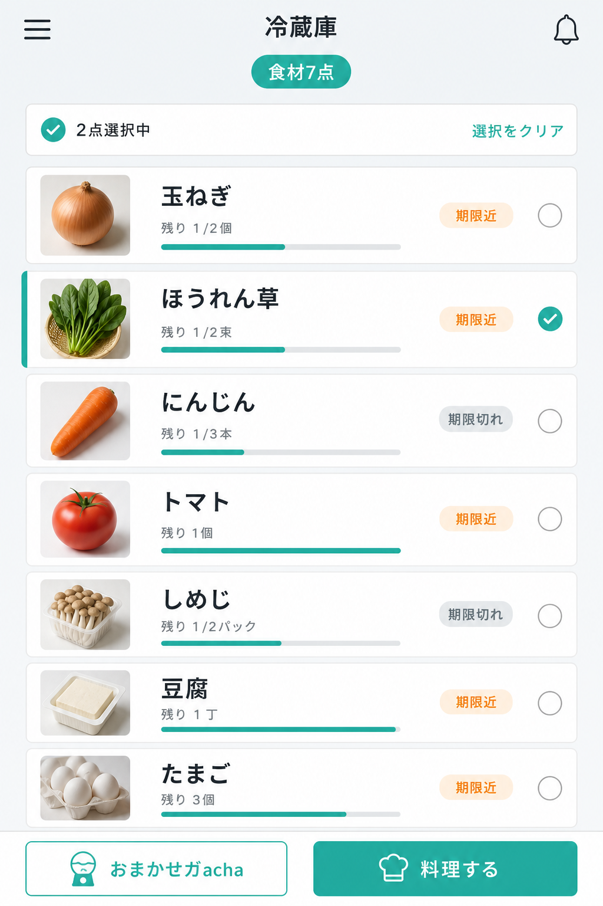
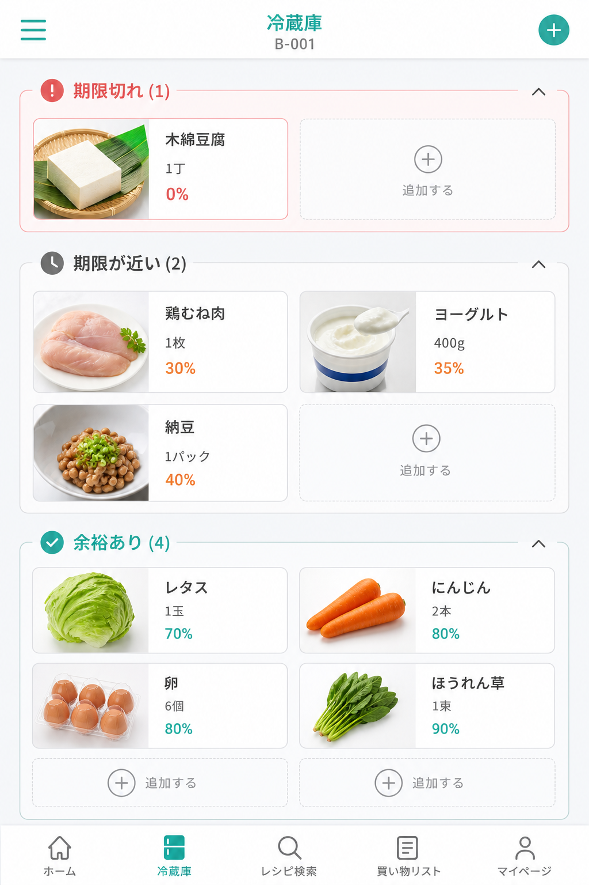
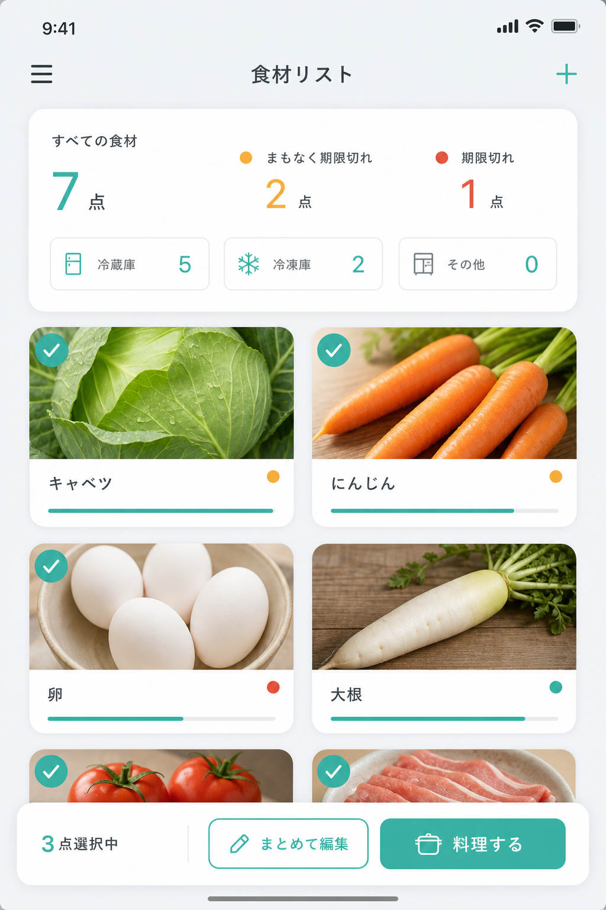
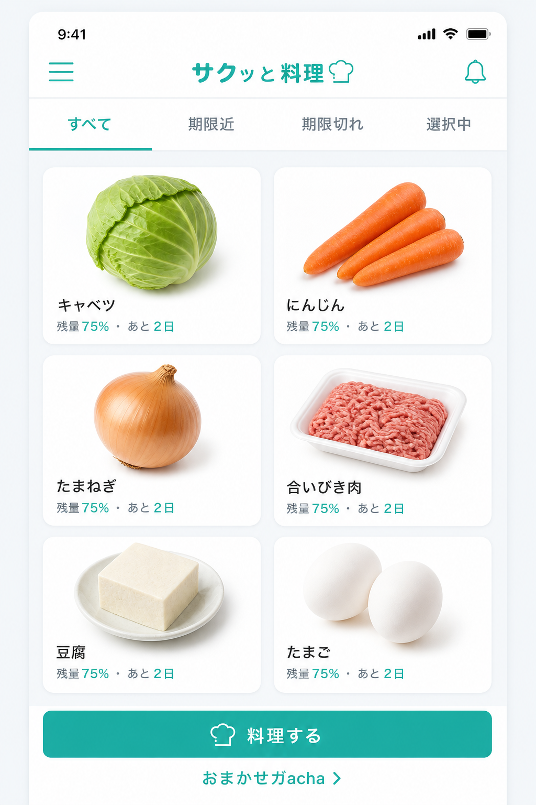

案 A：1 列リスト型
読みやすさ最優先。横長カードで名前・残量バー・期限ピルを整理。

- 食材名を大きく表示、3 列より情報が追いやすい
- 1 画面の件数は減る
案 B：期限セクション + 2 列
期限切れ / 期限近 / 余裕ありで自動グループ化。

- 期限管理が主目的のときに有効
- セクション見出しを sticky にするとスクロール中も文脈が保てる
案 C：サマリー + 簡略カード
上部サマリー + 2 列グリッド。現行構造から移行しやすい。

- 全体把握と一覧性のバランスが良い
- 選択バーとフッターの重複を解消しやすい
案 D：フィルタタブ + 2 列
タブで絞り込み、メタ情報を 1 行に集約。

- 今すぐ使う食材だけ絞り込みたいとき向け
- タブ分の縦スペースを消費
おすすめ： 案 C をベースに、案 B の「期限近を上に」を組み合わせる案。